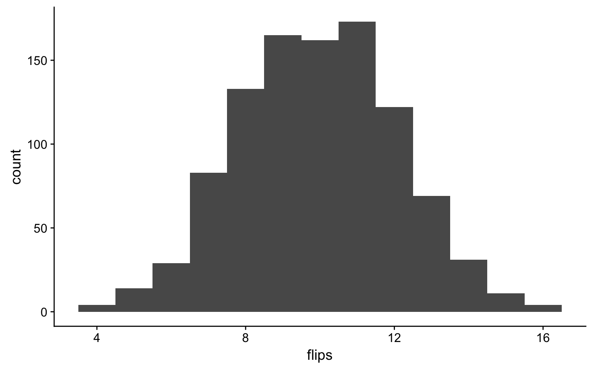
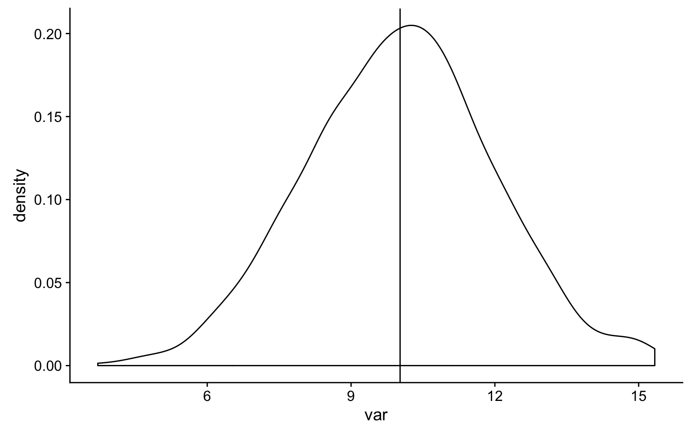
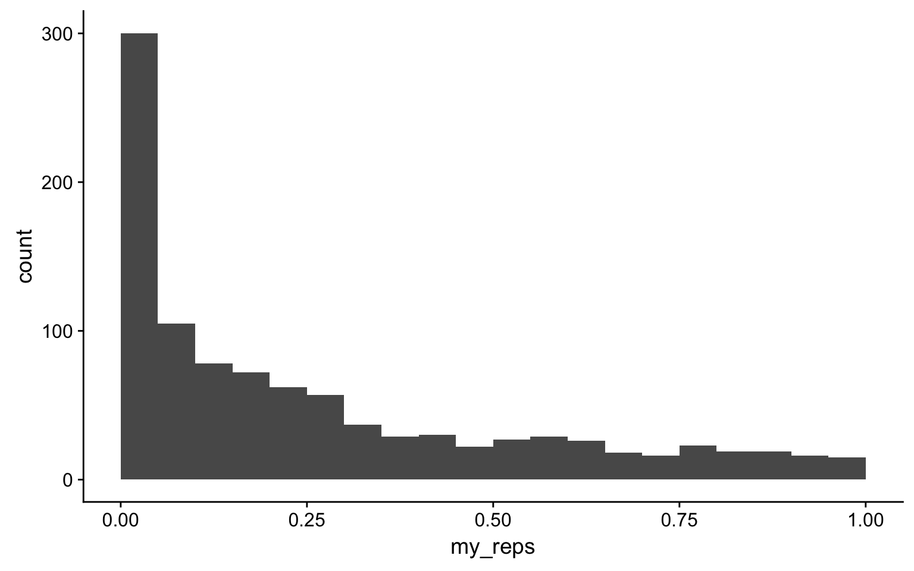
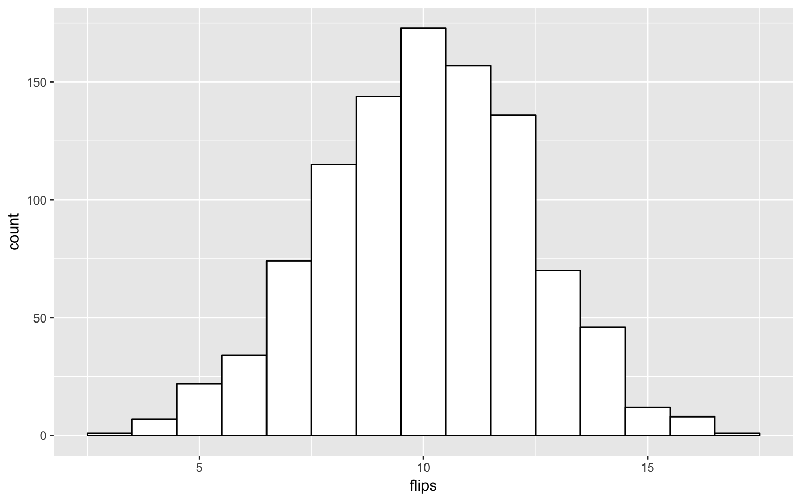
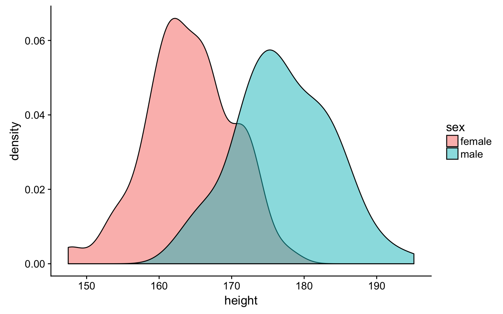
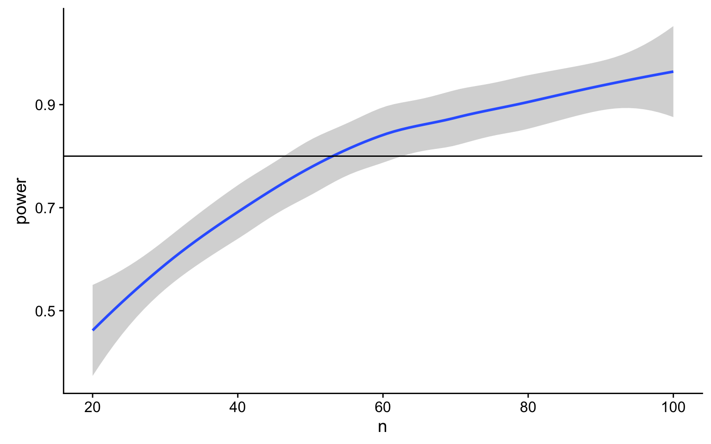
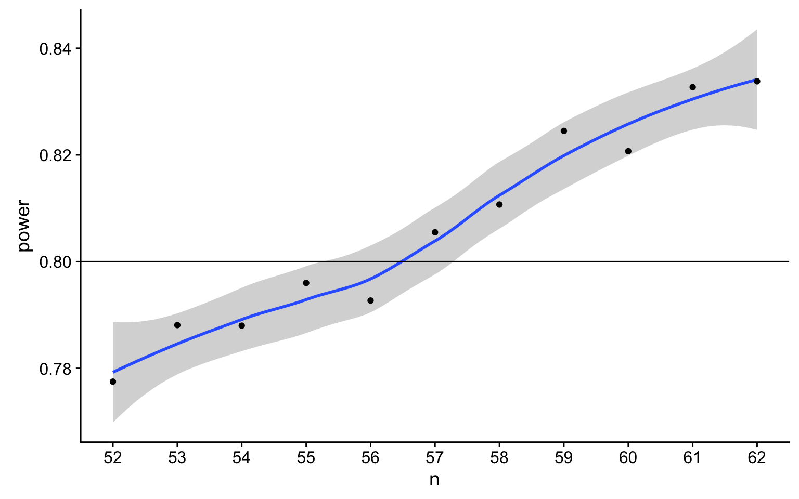

Simulating data is a very powerful way to test your understanding of statistical concepts. We are going to use simulations to learn the basics of probability theory.
# libraries needed for these examples
library(tidyverse)rbinom(n, size, prob)
The rbinom function will generate a random binomial distribution.
n = number of observationssize = number of trialsprob = probability of success on each trial20 individual coin flips of a fair coin
rbinom(20, 1, 0.5)## [1] 1 1 1 1 1 1 1 0 1 0 1 1 0 1 1 1 1 0 1 020 individual coin flips of a baised (0.75) coin
rbinom(20, 1, 0.75)## [1] 1 0 1 1 1 1 1 1 1 1 0 1 0 1 1 0 1 1 1 0The total number of heads in a series of 10 sets of 20 coin flips
rbinom(10, 20, 0.5)## [1] 9 11 10 13 10 11 10 10 12 12You should always plot your randomly generated data to check that it makes sense. It’s easiest to do that if you put your simulated data in a tibble first. A histogram is usually the best choice for plotting binomial data.
sim_flips <- tibble(
flips = rbinom(1000, 20, 0.5)
)
ggplot(sim_flips) +
geom_histogram(aes(flips), binwidth = 1)
Run the simulation above several times, noting how the histogram changes. Try changing the values of n, size, and prob.
rnorm(n, mean, sd)
We can simulate a normal distribution of size n if we know the mean and standard deviation (sd). A density plot is usually the best way to visualise this type of data if your n is large.
data <- tibble(
var = rnorm(1000, 10, 2)
)
ggplot(data, aes(var)) +
geom_density() +
geom_vline(xintercept = mean(data$var))
Run the simulation above several times, noting how the densisty plot changes. Try changing the values of n, mean, and sd.
You can run a one-sample t-test comparing the mean of your data to mu. Here is a simulated distribution with a mean of 0.5 and an SD of 1, creating an effect size of 0.5 SD when tested against a mu of 0. Run the simulation a few time to see how often the t-test returns a significant p-value.
sim_norm <- rnorm(100, 0.5, 1)
t.test(sim_norm, mu = 0)##
## One Sample t-test
##
## data: sim_norm
## t = 5.9193, df = 99, p-value = 4.669e-08
## alternative hypothesis: true mean is not equal to 0
## 95 percent confidence interval:
## 0.3963935 0.7961515
## sample estimates:
## mean of x
## 0.59627252-sample t-test.
a <- rnorm(100, 0.5, 1)
b <- rnorm(100, 0.7, 1)
t_ind <- t.test(a, b, paired = FALSE)
t_ind##
## Welch Two Sample t-test
##
## data: a and b
## t = -2.2677, df = 185.99, p-value = 0.0245
## alternative hypothesis: true difference in means is not equal to 0
## 95 percent confidence interval:
## -0.61707873 -0.04291524
## sample estimates:
## mean of x mean of y
## 0.4139104 0.7439073
The paired argument defaults to FALSE, but it’s good practice to always explicitly set it so you are never confused about what type of test you are performing.
We can use the names() function to find out the names of all the t.test parameters and use this to just get one type of data, like the estimates being compared.
names(t_ind)## [1] "statistic" "parameter" "p.value" "conf.int" "estimate"
## [6] "null.value" "alternative" "method" "data.name"t_ind$estimate## mean of x mean of y
## 0.4139104 0.7439073If you want to run the simulation many times and record information each time, first you need to turn your simulation into a function.
sim_t_test <- function(n, m1, sd1, m2, sd2) {
v1 <- rnorm(n, m1, sd1)
v2 <- rnorm(n, m2, sd2)
t_ind <- t.test(v1, v2, paired = FALSE)
return(t_ind$p.value)
}
sim_t_test(100, 0.5, 1, 0.7, 1)## [1] 0.2031349Then you can use the replicate() function to run it many times and save all the output values. You can calculate the power of your analysis by checking the proportion of your simulated analyses that have a p-value less than your alpha (the probability of rejecting the null hypothesis when the null hypothesis is true).
my_reps <- replicate(1000, sim_t_test(100, 0.7, 1, 0.5, 1))
alpha <- 0.05
power <- mean(my_reps < alpha)
power## [1] 0.3Run the code above several times. How much does the power value fluctuate? How many replications do you need to run to get a reliable estimate of power? How does this number compare to an online power calculator?
You can plot the distribution of p-values.
ggplot() + geom_histogram(aes(my_reps), binwidth = 0.05, boundary = 0)
What do you think the distribution of p-values is when there is no effect (i.e., the means are identical)? Check this yourself.
Make sure the boundary argument is set to 0 for p-value histograms. See what happens with a null effect if boundary is not set.
This example uses the Growth Chart Data Tables from the US CDC.
We have to do a little data wrangling first. Have a look at the data after you import it and relabel Sex to male and female instead of 1 and 2. Also convert Agemos (age in months) to years. Relabel the column 0 as mean and calculate a new column named sd as the difference between columns 1 and 0.
height_age <- read_csv("https://www.cdc.gov/growthcharts/data/zscore/zstatage.csv") %>%
filter(Sex %in% c(1,2)) %>%
mutate(
sex = recode(Sex, "1" = "male", "2" = "female"),
age = as.numeric(Agemos)/12,
sd = `1` - `0`
) %>%
select(sex, age, mean = `0`, sd)Plot you new data frame to see how mean height changes with age for boys and girls.
ggplot(height_age, aes(age, mean, color = sex)) +
geom_smooth(aes(ymin = mean - sd, ymax = mean + sd), stat="identity")
height_sub <- height_age %>% filter(age == 20)
height_subm_mean <- (height_sub %>% filter(sex == "male") %>% select(mean))[[1]]
m_sd <- (height_sub %>% filter(sex == "male") %>% select(sd))[[1]]
f_mean <- (height_sub %>% filter(sex == "female") %>% select(mean))[[1]]
f_sd <- (height_sub %>% filter(sex == "female") %>% select(sd))[[1]]
sim_height <- tibble(
male = rnorm(100, m_mean, m_sd),
female = rnorm(100, f_mean, f_sd)
) %>%
gather("sex", "height", male:female)
ggplot(sim_height) +
geom_density(aes(height, fill = sex), alpha = 0.5)
Run the simulation above several times, noting how the density plot changes. Try changing the age you’re simulating.
Use the sim_t_test(n, m1, sd1, m2, sd2) function we created above to generate one simulation with a sample size of 50 in each group using the means and SDs of male and female 14-year-olds.
height_sub <- height_age %>% filter(age == 14)
m_mean <- (height_sub %>% filter(sex == "male") %>% select(mean))[[1]]
m_sd <- (height_sub %>% filter(sex == "male") %>% select(sd))[[1]]
f_mean <- (height_sub %>% filter(sex == "female") %>% select(mean))[[1]]
f_sd <- (height_sub %>% filter(sex == "female") %>% select(sd))[[1]]
sim_t_test(50, m_mean, m_sd, f_mean, f_sd)## [1] 0.0121487Now replicate this 10000 times.
my_reps <- replicate(10000, sim_t_test(50, m_mean, m_sd, f_mean, f_sd))
alpha <- 0.05
power <- mean(my_reps < alpha)
power## [1] 0.6462This design has about 60% power to detect the sex difference in height (with a 2-tailed test). Modify the sim_t_test function for a 1-tailed prediction.
You could just set alternative equal to “greater” in the function, but it might be better to add the alternative argument to your function (giving it the same default value as t.test) and change the value of alternative in the function to alternative.
sim_t_test <- function(n, m1, sd1, m2, sd2, alternative = "two.sided") {
v1 <- rnorm(n, m1, sd1)
v2 <- rnorm(n, m2, sd2)
t_ind <- t.test(v1, v2, paired = FALSE, alternative = alternative)
return(t_ind$p.value)
}
my_reps <- replicate(10000, sim_t_test(50, m_mean, m_sd, f_mean, f_sd, "greater"))
mean(my_reps < alpha)## [1] 0.7686What if we want to find out what sample size will give us 80% power? We can try trial and error. We know the number should be slightly larger than 50. But you can search more systematically by repeating your power calculation for a range of sample sizes.
This might seem like overkill for a t-test, where you can easily look up sample size calculators online, but it is a valuable skill to learn for when your analyses become more complicated.
sample_size <- seq(20, 100, by = 5)
power_list <- sapply(sample_size,
function(n) {
my_reps <- replicate(100, sim_t_test(n, m_mean, m_sd, f_mean, f_sd, "greater"))
mean(my_reps < 0.05)
}
)
power_table <- tibble(
n = sample_size,
power = power_list
)
ggplot(power_table, aes(n, power)) +
geom_smooth() +
geom_hline(yintercept = 0.8)
Start with a relatively low number of replications and/or more spread-out samples to estimate where you should be looking more specifically. Then you can repeat with a narrower/denser range of sample sizes and more iterations.
sample_size <- seq(52, 62)
power_list <- sapply(sample_size,
function(n) {
my_reps <- replicate(10000, sim_t_test(n, m_mean, m_sd, f_mean, f_sd, "greater"))
mean(my_reps < 0.05)
}
)
power_table <- tibble(
n = sample_size,
power = power_list
)
ggplot(power_table, aes(n, power)) +
geom_smooth() +
geom_point() +
geom_hline(yintercept = 0.8) +
scale_x_continuous(breaks=seq(52,62))